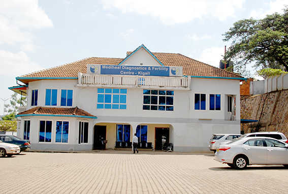
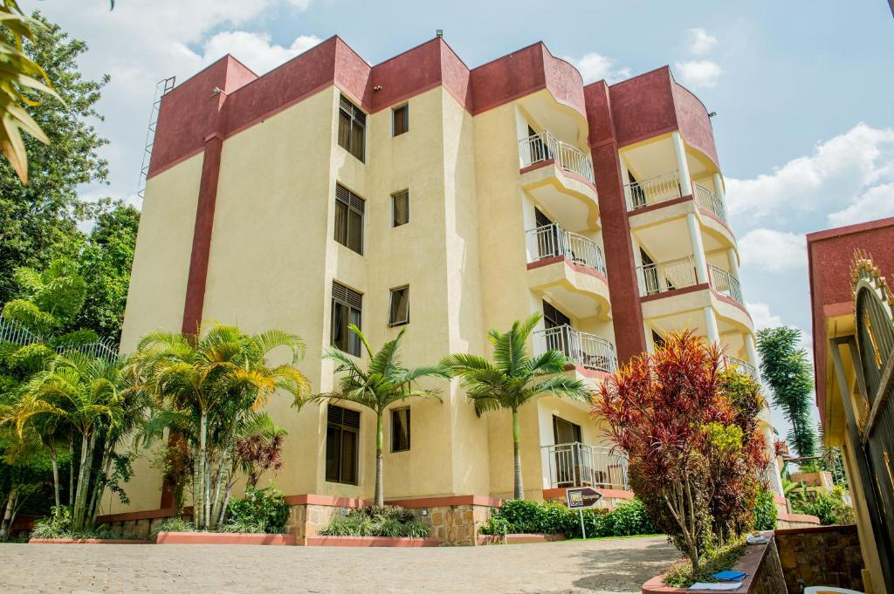
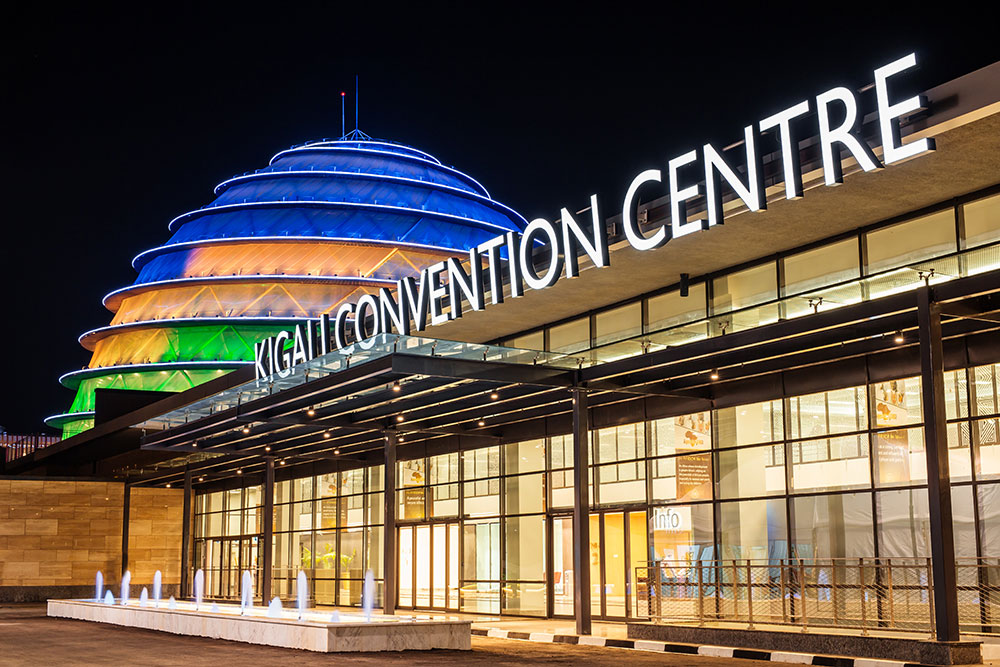
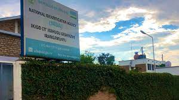
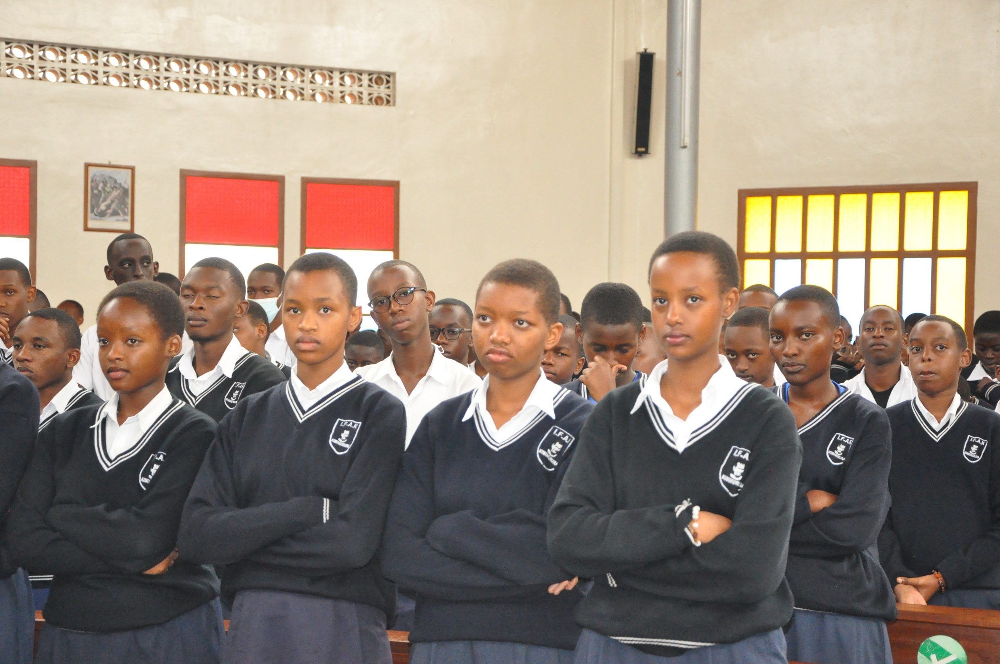
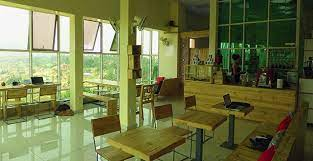

Rwanda
Rwanda
Gasabo District
KIMIHURURA SECTOR
Hospitals | |
Fasial hospital
King Faisal Hospital, Rwanda (KFHR) is a multi-specialty quaternary Hospital with a mandate to provide specialized health care in East and Central Afric
|
|
|  |
Mediheal Diagnostics & Fertility Centre - Kigali
Mediheal Diagnostic and Fertility Centre offers specialized and advanced services in medical investigations and obstetrics & gynaecology
|
Hotels and Apartment | |
|  |
Rohi Apartments
Set 200 meters from Kigali Conventional Center, Rohi Apartments provides accommodation with seating area. Complimentary WiFi is featured. |
|  |
Kigali Convention Centre
The Kigali Convention Centre (KCC) is a purpose convention facility built and supported financially by the Rwanda government and incorporated in 2013. |
Gavement Office | |
|  |
National identification agencies
The National Identification Agency “NIDA” is established by the law No 43/2011 of 31/10/2011, law establishing National Identification Agency Road: KG 9 ave, Kimihurura, Kigali, Rwanda |
Rwanda imvestigation bureau
Responsible for Investigative functions and partners with other law enforcement agencies |
|
Gavement Office | |
|  |
IFAK Secondary School
IFAK (Institut de Formation Apostolique de Kimihurura) is a Private secondary School located at Kimihurura sector, Gasabo District in Kigali city
|
University Of Kigali
University of Kigali is one of the leading private higher institutions of learning in Rwanda. It is a fully accredited chartered University
|
|
Shop | |
IFAK Secondary School
Simba Supermarket, a leading supermarket in Kigali, We offer quality service at an affordable price. |
|
Intertainment | |
|  |
Inzora Rooftop Cafe
In Kigali, Rwanda, INZORA is more than just another cafe. Perched high, with a view of the rising city in the distance, and the traditional life of the valley below, INZORA provides the perfect vantage point for inspiration
|
Kigali golf resolt
The most precious gem of Africa, the “Land of Thousand Hills” gave birth to the new challenging and ecologically responsible Kigali Golf Resort and Villas.
|
|
KG617 Rd,Kigali
Phone number: +250789704679
Email : kimihurura203@gmail.com
FB: kimihurura sector
Twiter: kimihurura sector
Instagram: kimihurura sector